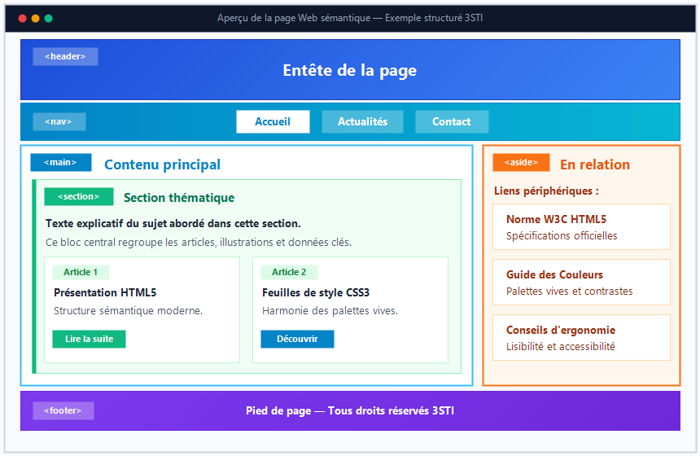

Aux débuts du Web, la mise en page des sites reposait quasi exclusivement sur des conteneurs génériques :
l'élément <div> pour les blocs et <span> pour le texte en-ligne,
auxquels les développeurs attribuaient des classes arbitraires comme <div class="header">
ou <div class="footer">.
Le standard HTML5 a révolutionné cette approche en introduisant les balises
sémantiques.
Une balise est dite sémantique lorsqu'elle porte du sens et indique explicitement la
nature
et le rôle du contenu qu'elle délimite.
Les balises génériques (non sémantiques) :
telles que <div> (bloc) et <span> (en-ligne), ne fournissent aucune
indication sur la nature de leur contenu. Elles servent uniquement à regrouper et organiser des éléments pour
leur appliquer des règles de style CSS (mise en page, couleurs) ou pour les manipuler en JavaScript (via des
classes ou des identifiants).
Les balises sémantiques de texte :
comme <p>, les titres <h1> à <h6>,
<strong>, <em> ou <mark>, apportent une signification
éditoriale précise (paragraphe, hiérarchie de titre, importance forte, accentuation ou surlignage).
Les balises sémantiques de structuration de page :
introduites avec HTML5 (comme <header>, <nav>,
<main>, <article>, <section>,
<aside> et <footer>), délimitent les grandes régions fonctionnelles et
logiques d'un document Web.
Pourquoi la sémantique HTML5 est-elle indispensable ?
1. Accessibilité (A11y) :
Les lecteurs d'écran utilisés par les personnes malvoyantes utilisent les balises sémantiques pour proposer
une navigation par régions (par exemple : sauter directement au <main> ou explorer le
menu <nav>).
2. Optimisation du référencement (SEO) :
Les robots des moteurs de recherche (Google, Bing) analysent la structure de la page pour identifier
facilement le contenu prioritaire et hiérarchiser les informations.
3. Lisibilité et maintenance du code :
Un document HTML structuré avec des balises sémantiques est immédiatement compréhensible pour toute une
équipe de développement.
Question d'auto-évaluation
Testez votre compréhension de la différence entre balisage générique et balisage sémantique.
Question
Quelle est la différence fondamentale entre écrire <div id="menu"> et utiliser la
balise <nav> ?
💡 Cliquez ici pour afficher la réponse
Bien que les deux éléments puissent avoir exactement le même rendu visuel à l'écran grâce au CSS, leur
valeur sémantique est radicalement différente :
<div id="menu"> est une simple boîte générique. Le mot "menu" n'a
aucun sens pour le navigateur ou pour une synthèse vocale ; il s'agit juste d'un identifiant textuel
arbitraire.
<nav> est reconnue nativement par tous les navigateurs et outils d'assistance comme
une zone de navigation principale. Elle permet aux technologies d'assistance de fournir
des raccourcis clavier pour y accéder directement.
Structuration de la page
Architecture globale
HTML5 définit un ensemble de balises de niveau bloc dédiées à l'organisation spatiale et logique du document.
Le schéma ci-dessous illustre l'agencement type d'une page Web moderne :
Architecture structurelle d'une page Web à l'aide des balises
sémantiques HTML5
Chaque bloc joue un rôle précis et bien délimité dans l'expérience utilisateur et l'arbre du document.
En-tête et Navigation
1. L'en-tête de document ou de section : <header>
La balise <header>...</header> regroupe les éléments introductifs d'une page ou d'une
section :
logo du site, titre principal, sous-titre, slogan, et parfois une barre de recherche rapide.
Remarque sémantique : une page peut contenir plusieurs éléments <header> (par
exemple, l'en-tête général du site dans <body>, et un en-tête propre à chaque
<article>).
<header>
<img src="images/logo.png" alt="Logo du Lycée">
<h1>Lycée Secondaire Pilote</h1>
<p>Portail des Sciences de l'Informatique</p>
</header>
2. La barre de navigation : <nav>
La balise <nav>...</nav> délimite une section contenant les liens de navigation
majeurs du site
(menu principal, menu de pied de page, fil d'Ariane ou pagination).
Bonne pratique pédagogique : les liens de navigation doivent toujours être structurés sous la
forme d'une liste non ordonnée <ul> / <li> pour garantir une navigation
claire et accessible.
La balise <main>...</main> englobe le contenu central et exclusif de la page Web.
Elle exclut le contenu qui se répète sur l'ensemble du site (comme l'en-tête global, le menu de navigation et
le pied de page).
Règle stricte du W3C : il ne doit y avoir qu'un seul élément
<main> visible par document HTML.
L'élément <main> ne doit jamais être imbriqué à l'intérieur d'un
<header>, d'un <nav>, d'un <aside> ou d'un
<footer>.
2. L'article autonome : <article>
La balise <article>...</article> représente une composition indépendante et autonome
qui a du sens
par elle-même et pourrait être réutilisée ou distribuée hors du contexte du site (ex. via un flux RSS, un
agrégateur d'actualités).
Cas d'usage typiques : un article de presse, une publication de blog, une fiche de cours,
une critique de livre ou un commentaire d'utilisateur.
3. La section thématique : <section>
La balise <section>...</section> regroupe des contenus liés par une thématique
commune.
Chaque section débute généralement par son propre titre hiérarchique (<h2> à
<h6>).
Règle de décision : Quand choisir <article> ou <section> ?
Si le contenu a un sens complet lorsqu'il est extrait de la page → utilisez
<article>.
Si le contenu n'est qu'une sous-division thématique du document ou de l'article → utilisez
<section>.
Imbrication : un <article> peut être découpé en plusieurs
<section>, et inversement, une <section> peut regrouper plusieurs
<article> (ex. une section « Dernières actualités » contenant 3 articles).
Contenu connexe et Pied de page
1. Le contenu connexe (ou périphérique) : <aside>
La balise <aside>...</aside> contient des informations secondaires ou
complémentaires,
qui ont un rapport indirect avec le contenu principal qui les entoure.
Exemples d'utilisation :
Une barre latérale (sidebar) affichant des articles recommandés ou récents.
Un encadré de définition, un glossaire ou une anecdote historique liée au sujet.
La biographie de l'auteur d'un article.
2. Le pied de page : <footer>
La balise <footer>...</footer> clôture un document entier ou une section donnée.
Elle regroupe traditionnellement :
Les mentions légales et droits d'auteur (copyright).
Les liens vers la politique de confidentialité et le plan du site.
Les coordonnées de contact (souvent associées à la balise <address>).
L'année scolaire ou la date de dernière mise à jour.
Exemple complet de mise en page structurée
Voici l'exemple pratique officiel montrant comment combiner harmonieusement toutes les balises structurelles
en HTML5 :

Aperçu visuel de la maquette structurée
Code HTML5 complet
<!DOCTYPE html>
<html lang="fr">
<head>
<meta charset="UTF-8">
<meta name="viewport" content="width=device-width, initial-scale=1.0">
<title>Structure sémantique HTML5</title>
<link rel="stylesheet" href="style.css">
</head>
<body>
<header>
<h1>Entête de la page</h1>
</header>
<nav>
<ul>
<li><a href="#">Accueil</a></li>
<li><a href="#">Actualités</a></li>
<li><a href="#">Contact</a></li>
</ul>
</nav>
<div class="conteneur-corps">
<main>
<h2>Contenu principal</h2>
<section>
<h3>Section thématique</h3>
<p>Texte explicatif du sujet abordé dans cette section.</p>
</section>
</main>
<aside>
<h3>En relation</h3>
<p>Liens et informations périphériques.</p>
</aside>
</div>
<footer>
<p>Pied de page — Tous droits réservés 3STI</p>
</footer>
</body>
</html>
En HTML5, lorsqu'une image, un schéma, un graphique ou un extrait de code est accompagné d'une légende
explicative,
on utilise le binôme sémantique <figure> et <figcaption> :
<figure> (Conteneur de média) :
englobe le contenu multimédia (image, illustration, extrait de code, vidéo) perçu comme une unité
indépendante du flux du texte.
<figcaption> (Légende de la figure) :
contient la légende ou la description textuelle de la figure. Elle se place obligatoirement comme premier ou
dernier enfant direct de <figure>.
<figure>
<img src="assets/miniprojet02/images/motherboard.jpg" alt="Carte mère d'un ordinateur de bureau">
<figcaption>Figure 1.1 : Vue d'ensemble des composants d'une carte mère ATX</figcaption>
</figure>
Figure 1.1 : Vue d'ensemble des composants d'une carte mère
ATX
Blocs dépliables
HTML5 permet de créer des menus accordéons ou des blocs dépliables interactifs sans écrire une seule
ligne de JavaScript :
<details> :
balise conteneur dont le contenu peut être masqué ou révélé par l'utilisateur.
<summary> :
fournit l'intitulé visible et cliquable du bloc. Elle est toujours accompagnée d'un petit triangle
orientable par le navigateur.
Attribut open :
attribut booléen facultatif. Lorsqu'il est présent (<details open>), le bloc est ouvert
et visible dès le chargement initial de la page.
⚡ Démonstration interactive :
Prérequis de la Séance n°2
Maîtrise de la structure minimale d'un document HTML5 (<!DOCTYPE>,
<html>, <head>, <body>).
Utilisation correcte des titres (<h1> à <h6>) et des paragraphes
(<p>).
Notions de base du modèle de boîte CSS (marges, bordures et remplissage).
<!-- Bloc dépliable ouvert par défaut -->
<details open>
<summary>Prérequis de la Séance n°2</summary>
<ul>
<li>Maîtrise de la structure minimale d'un document HTML5 (<!DOCTYPE>, <html>, <head>, <body>).</li>
<li>Utilisation correcte des titres (<h1> à <h6>) et des paragraphes (<p>).</li>
<li>Notions de base du modèle de boîte CSS (marges, bordures et remplissage).</li>
</ul>
</details>
Mise en valeur & Références
1. Surlignage contextuel : <mark>
La balise <mark>...</mark> indique un passage de texte mis en surbrillance pour sa
pertinence dans un contexte précis (terme recherché, élément clé d'une citation). Par défaut, les navigateurs
lui appliquent un fond jaune vif.
Exemple de rendu : Pensez à fermer toutes les balises imbriquées
pour éviter les erreurs d'affichage.
<p>Pensez à <mark>fermer toutes les balises imbriquées</mark> pour éviter les erreurs.</p>
2. Coordonnées de l'auteur : <address>
La balise <address>...</address> fournit les informations de contact pour l'auteur ou
le propriétaire du document.
Elle contient généralement un e-mail, un numéro de téléphone, une adresse physique ou un lien de contact. Elle
s'intègre typiquement dans le <footer>.
La balise <cite>...</cite> représente le titre d'un travail créatif (un livre, un
article, un film, une œuvre d'art ou un site web). Le navigateur l'affiche généralement en italique.
<p>D'après l'ouvrage <cite>Conception Web moderne</cite>, la sémantique est le pilier du HTML5.</p>
Balise
Rôle sémantique
Rendu par défaut
Emplacement type
<mark>
Surlignage contextuel / mise en évidence
Fond jaune
Au sein d'un paragraphe <p>
<address>
Coordonnées de l'auteur / propriétaire
Texte en italique avec saut de ligne
Dans <footer> ou fin d'article
<cite>
Référence ou titre d'une œuvre
Texte en italique
En-ligne dans une citation ou bibliographie
Ateliers Pratiques
Application 1 : Computers
L'objectif de cet atelier est de mettre en pratique les balises sémantiques de structuration de page en
concevant
un mini-site documentaire complet intitulé « Computers ».
Chaque page du site doit impérativement respecter le découpage sémantique illustré ci-dessous :
Structure sémantique attendue pour les pages du site Computers
Cahier des charges & Travail à réaliser
Téléchargement & Extraction :
Téléchargez l'archive computers-todo.zip, décompressez-la et ouvrez le dossier sous Visual
Studio Code.
Structure globale commune :
Chacune des 4 pages (index.html, uses.html, types.html,
parts.html) doit comporter :
Un en-tête <header> contenant le titre principal
<h1>Computers</h1> et le slogan
<p>A serie of what's</p>.
Une barre de navigation <nav> contenant une liste à puces <ul>
avec les 4 liens, la page courante étant repérée par la classe class="active".
Un conteneur central <main> enveloppant le titre du sujet et le contenu
rédactionnel.
Un pied de page <footer> avec la mention de copyright.
Feuille de styles liée :
Créez ou complétez le fichier style.css pour harmoniser la présentation (les couleurs et
polices sont laissées au libre choix de l'élève).
Application 2 : Fruits Universe
Cet atelier met l'accent sur l'application de feuilles de styles CSS pour transformer une structure sémantique
brute en une interface web moderne.
Le site se compose de trois pages thématiques présentant la fraise, la pomme et le raisin.
Cliquez sur chaque vignette pour ouvrir la maquette en grand format :
Aperçu visuel des trois maquettes du projet Fruits Universe
Étapes de réalisation guidée
1. En-tête sombre : appliquez à <header> un fond sombre (ex.
background-color: #111;), un texte en blanc et une typographie à empattement (serif) élégante.
2. Navigation horizontale : stylisez la balise <nav> avec un fond
contrasté et disposez les liens en ligne sans puces (list-style: none; display: flex;). Mettez
en surbrillance rouge le fruit actif.
3. Corps de page & Tableaux : mettez en page le conteneur <main> sur
fond blanc centré, intégrez la photo du fruit avec une bordure discrète et formatez le tableau statistique
des productions (<table> avec bordures horizontales simples et alignement soigné).
4. Pied de page : centrez le texte du copyright dans <footer> sur fond
sombre.